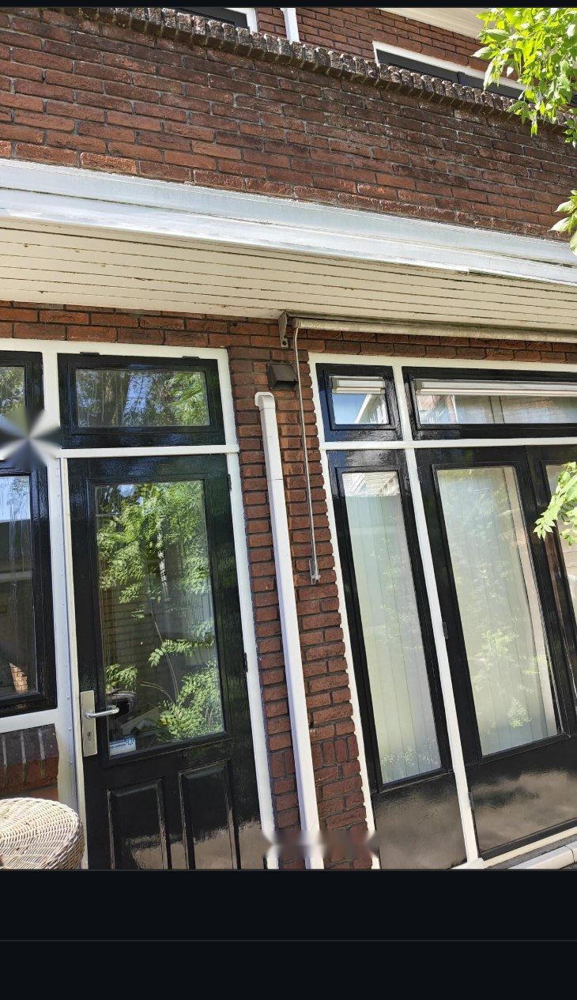
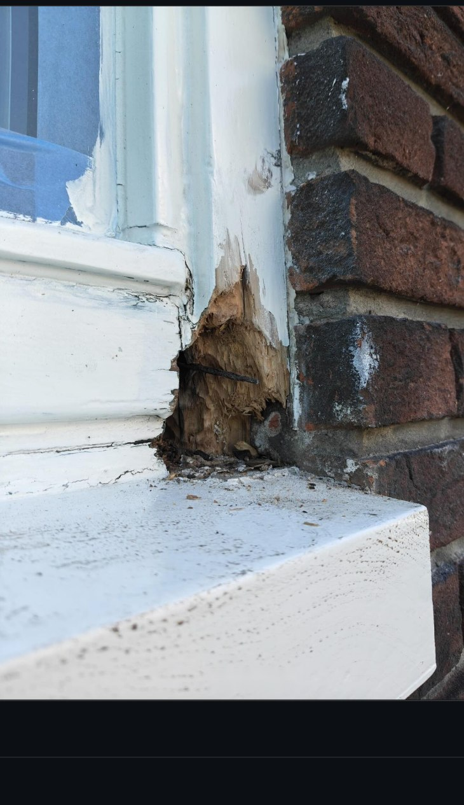
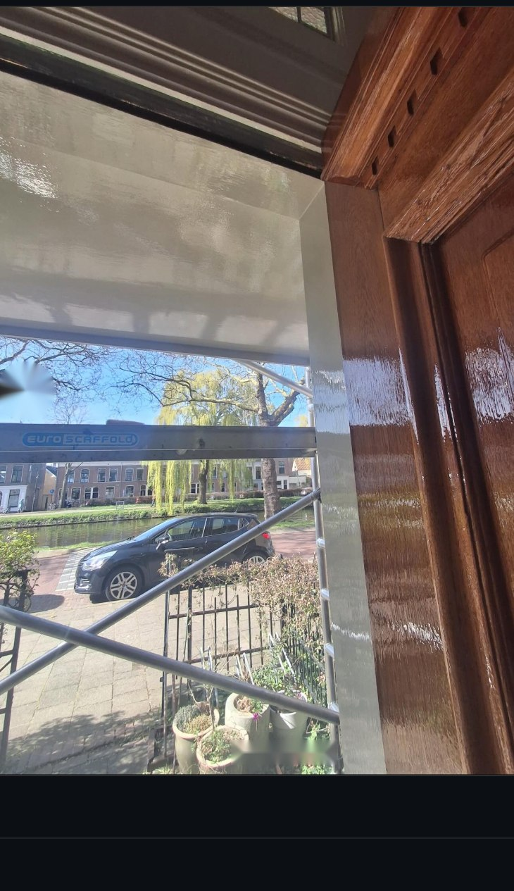
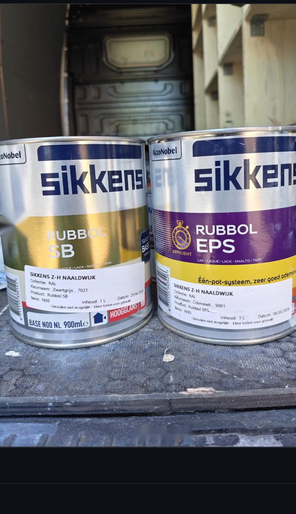

Van een enkel kozijn tot een volledige gevel — elk project begint met een grondige voorbereiding en eindigt met een afwerking die jaren meegaat.

Kozijnen, deuren, gevels, plafonds en wanden — strak en duurzaam geschilderd met hoogglansverf van Sikkens en Sigma. Voor zowel bestaand houtwerk als nieuwe elementen.

Aangetast hout wordt eerst volledig hersteld voordat er geschilderd wordt — zo blijft de basis gezond en gaat de afwerking veel langer mee. Elk voor-en-na traject wordt zorgvuldig gedocumenteerd.

Naden en voegen rond ramen en deuren waterdicht afgekit voor een strakke, duurzame afwerking die vocht en tocht buiten houdt.
Relingen en balkonhekken in hoogglanslak — bestand tegen weer en wind, met een strakke afwerking.
Volledige gevels en dakranden geschilderd en beschermd tegen weersinvloeden.
Winkelpanden en bedrijfsruimtes — van pui tot kozijn — representatief afgewerkt.

Neem contact op via WhatsApp of e-mail en vertel kort over het project.
Ter plaatse bekijken we de staat van het hout en het te schilderen oppervlak.
Een heldere, vrijblijvende offerte afgestemd op de situatie.
Zorgvuldige reparatie en afwerking, van eerste tot laatste laag.